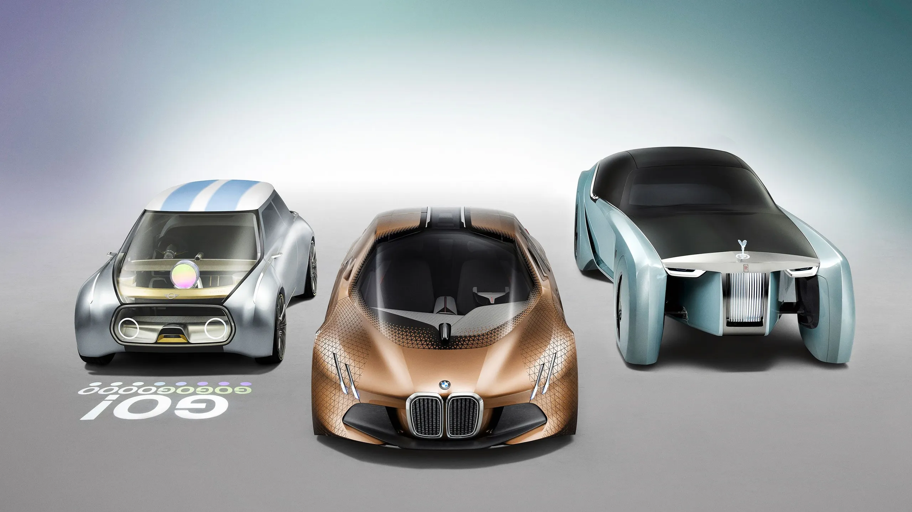
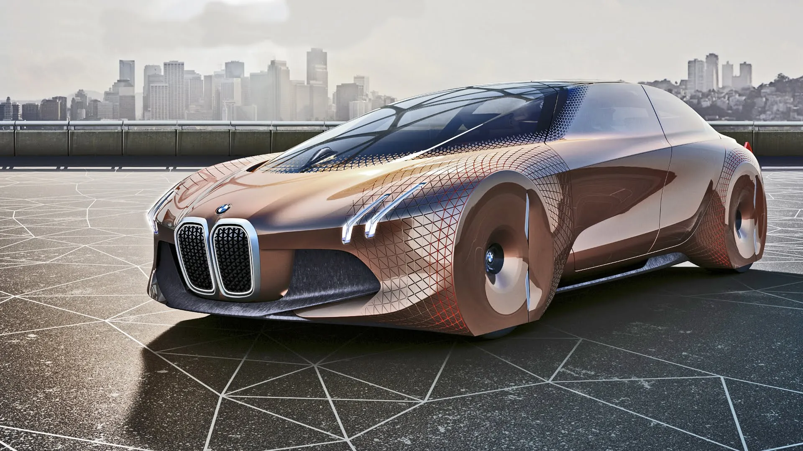
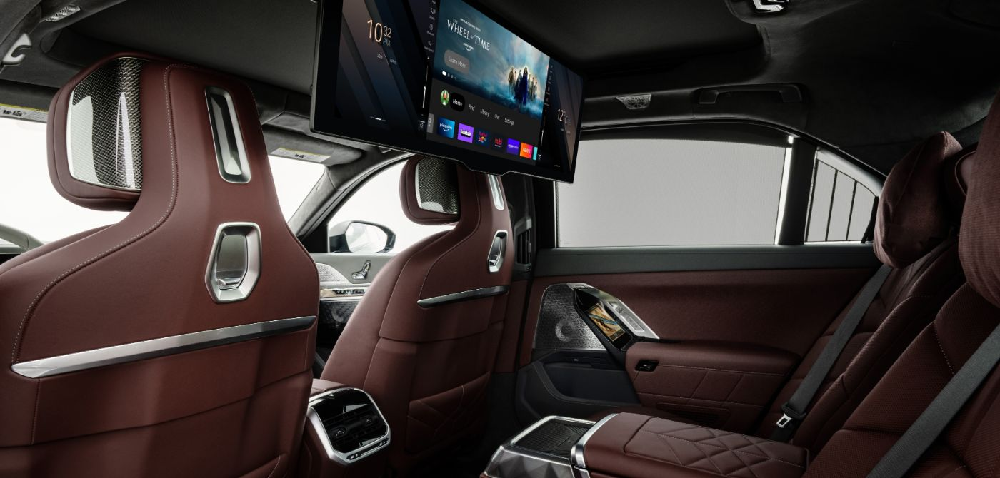
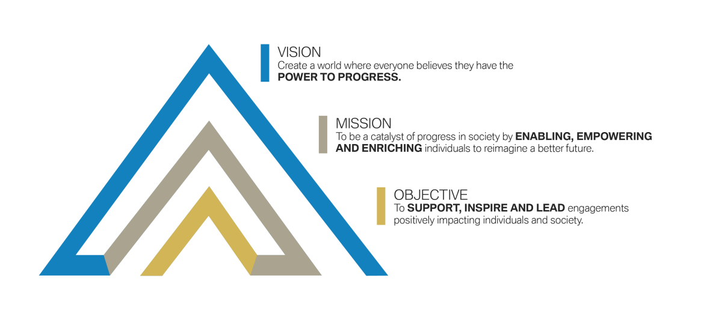

HOME
MODELS
CONTACT US
SIGN UP
HOME
MODELS
CONTACT US
SIGN UP

THE BMW GROUP
With its four brands BMW, MINI, Rolls-Royce and BMW Motorrad, the BMW Group is the world’s leading premium
manufacturer of automobiles and
motorcycles and also provides premium financial and mobility services. The BMW Group
production network comprises over 30 production sites worldwide;
the company has a global sales network in more than 140 countries.
In 2022, the BMW Group sold nearly 2.4 million passenger vehicles and more than 202,000 motorcycles worldwide.
The
profit before tax in the financial year
2022 was € 23.5 billion on revenues amounting to € 142.6 billion. As of 31
December 2022, the BMW Group had a workforce of 149,475 employees.
The success of the BMW Group has always been based on long-term thinking and responsible action. The company set
the
course for the future at an early
stage and consistently makes sustainability and efficient resource management
central to its strategic direction, from the supply chain through production to
the end of the use phase of all products.

BMW AND INDIA : TWO SUCCESS STORIES - ONE FUTURE
The new home of sheer driving pleasure.
As the leading brand worldwide in the premium car segment, BMW is proud to announce its business
operations
in
India. Committing to a strong, long-term
partnership, BMW looks forward to setting another milestone in the
automotive history. The dynamic BMW range offers discerning drivers a world of unrivalled
innovations, premium quality and sheer driving pleasure.

Experince Excellence
At BMW, we believe in one thing above all: courage. A trait, that is deeply rooted in our DNA and
shows in everything we do. In our quest to reach new levels
of excellence, we create unique and
inspiring moments along the way. This is where a new kind of luxury is born.

BMW INDIA FOUNDATION - VISION AND
MISSION.
BMW India Foundation is committed to enhancing the lives of people in India through innovative
and sustainable solutions to pressing social issues, thus,
creating a better future.
Quick Links
© BMW 2024